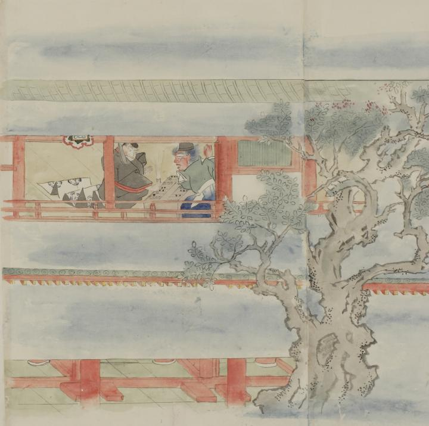

朱雀門で双六を打つ長谷雄と鬼。鬼は人間の男の姿をしていたが、双六で負けたため本性の鬼の姿に戻っている。
著作者：村田嘉言写／出典：親書誌：U426_nichibunken_0062：中納言長谷雄卿圖巻；チュウナゴンハセオキョウエマキ／日付：2007／資源識別子：U426_nichibunken_0062_0001_0000
Copyright (c)2010- International Research Center for Japanese Studies, Kyoto, Japan. All rights reserved.